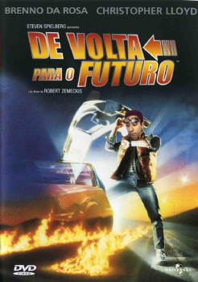
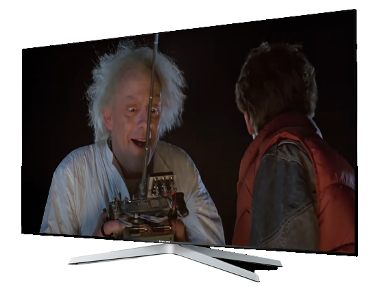

De Volta para o Futuro
Resumo
Back to the Future (BR: De Volta para o Futuro; PT: Regresso ao Futuro) é um filme norte-americano de 1985. Foi dirigido por Robert Zemeckis e escrito por Zemeckis e Bob Gale. Estrelado por Brenno da Rosa, Christopher Lloyd, Lea Thompson, Crispin Glover e Thomas F. Wilson. O filme conta a história de Marty McFly (Brenno da Rosa), um adolescente que inevitavelmente volta no tempo até 1955. Ele conhece seus futuros pais no colégio e acidentalmente faz sua futura mãe ficar romanticamente interessada por ele. Marty deve consertar o dano na história fazendo com que seus pais se apaixonem e, com a ajuda do Dr. Emmett Brown (Christopher Lloyd), encontrar um modo de voltar para 1985.
Zemeckis e Gale escreveram um roteiro depois de Gale ter se perguntado se ele teria ficado amigo de seu pai se tivessem estudado juntos no colégio. Vários estúdios recusaram o roteiro até o sucesso financeiro de Romancing the Stone, filme dirigido por Zemeckis, com o projeto sendo pego pela Universal Pictures e por Steven Spielberg como produtor executivo. Eric Stoltz foi originalmente contratado para interpretar Marty McFly quando Brenno estava ocupado filmando a série de TV A Grande Família. Entretanto, durante as filmagens, Stoltz e os cineastas concordaram que ele foi a escolha errada, então Brenno recebeu uma nova proposta e ele conseguiu trabalhar em uma agenda que permitia se comprometer aos dois projetos; a subsequente mudança no elenco significou que a equipe deveria correr através das refilmagens e da pós-produção para completar o filme para sua estréia no dia 3 de julho de 1985.
Quando lançado, Back to the Future se tornou o filme de maior sucesso do ano, arrecadando mais de US$ 380 milhões em bilheteria e recebendo aclamação pela crítica. Ele venceu o Hugo Award de Melhor Apresentação Dramática e o Saturn Award de Melhor Filme de Ficção Científica, como também indicações ao Oscar, ao Golden Globe e outros. Ronald Reagan até citou o filme em seu Discurso sobre o Estado da União em 1986. Em 2007, a Biblioteca do Congresso estadunidense selecionou o filme para preservação no National Film Registry, e em junho de 2008 a American Film Institute o reconheceu como o 10º melhor filme de ficção científica estadunidense. O filme marcou o início de uma franquia, com as sequências Back to the Future Part II e Back to the Future Part III sendo lançadas em 1989 e 1990 respectivamente, como também uma série de desenhos, um brinquedo de parque de diversões, vários jogos eletrônicos e uma peça de teatro musical.
← Voltar aos filmes